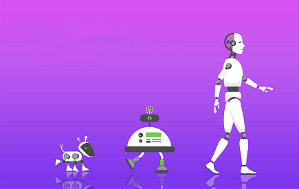

Types of artificial intelligence
LINKS
- MAIN PAGE
- Introduction
- Applications
- Types of artificial intelligence
- Artificial Intelligence Philosophy
Artificial intelligence can be divided into:
1-Narrow artificial intelligence
It is artificial intelligence that specializes in one field. For example, there are artificial intelligence systems that can beat the world champion of chess, and it's the only thing you do.
2-General artificial intelligence
This type refers to computers with a level of human intelligence in all areas, that is, it can perform any intellectual task that a person can perform. Creating this type of intelligence is much more difficult than the previous type and we have not reached this level yet.
3-Superior artificial intelligence
Oxford philosopher Nick Bostrom defines supreme intelligence as “an idea that is much smarter than the best human minds in almost every field, including scientific creativity, general wisdom, and social skills.” Because of this type, the field of artificial intelligence is an interesting field to delve into.
